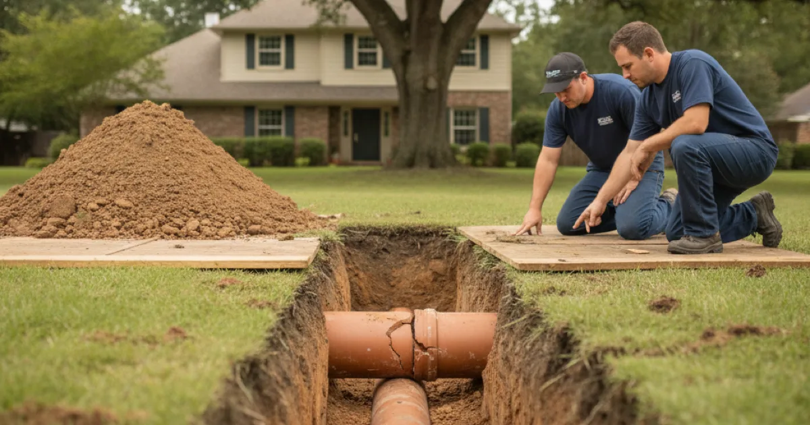

Sewer Line Repair in Westchester County, NY
The trees that make these neighbourhoods worth living in are also what’s in your sewer lateral. We find where they got in, and fix the opening rather than just cutting the roots back again.
- Licensed & Insured
- Upfront Pricing
- Clear Explanations Before Work Begins
- 15+ Years of Experience

Why roots find your lateral
Tree roots aren’t hunting for your sewer line. They’re looking for water and nutrients, and a sewer lateral leaks a small amount of warm, moist vapour at any joint that isn’t perfectly sealed. In dry weather that vapour is the most attractive thing underground for some distance.
Once a root hair finds that opening, it grows through it and then thickens. What starts as something you could break with your fingers becomes a mass that catches paper and grease and eventually stops the line. The tree isn’t the problem — the opening is.
This matters here because of what’s in the ground. Older neighbourhoods across the county were plumbed with clay laterals laid in short sections with mortared joints, and those joints shift over decades of freeze and thaw. Add the mature trees this area is known for, and the two find each other reliably.
It’s also why cutting roots out is a treatment rather than a cure. Clearing the line restores flow, and the roots grow back toward the same opening because the opening hasn’t changed. That isn’t a reason to panic or to dig immediately — plenty of lines are managed this way for years — but you should know which one you’re paying for.
Signs the line itself is failing
Roots are one cause. A lateral can also crack, separate at a joint, settle into a dip, or collapse outright. The symptoms overlap, and these are the ones that point at the pipe rather than a blockage:
- The lowest drains in the house back up first. Basement floor drains and ground-floor showers are the early warning.
- Multiple fixtures affected at once, particularly when using one makes another gurgle.
- Blockages returning in the same place within months of being cleared.
- A patch of lawn that’s greener or lusher along the line’s run, or soft ground and small depressions where soil is washing into a break.
- Sewer smell outside near the lateral rather than inside the house.
- Rodent activity. Unpleasant, but a genuine indicator — a broken lateral is an entry point.
None of these prove a break on their own. Together with a clearing history, they build a fairly clear picture, and the sensible next step is inspecting before we dig rather than committing to excavation on a guess.
Repair options, and what drives the cost
Once we know what’s actually wrong and where, there’s usually more than one way forward.
Spot repair — excavating one section and replacing it. Where a single joint or short break is the problem and the rest of the line is sound, this is the least disruptive and least expensive option.
Full replacement — where the line is failing along its length, or is old clay that will keep producing the same problem elsewhere. More work, but it ends the cycle.
Trenchless methods — lining or bursting an existing line without opening the whole run. Not suitable for every situation, particularly a fully collapsed line, but worth asking about when a driveway or mature planting sits over the route. Bob Vila has a reasonable overview of how trenchless sewer replacement compares to digging if you want to understand the trade-offs before we talk.
What actually moves the price:
- Depth and length of the run needing work.
- What’s on top — lawn is straightforward, a driveway or mature landscaping is not.
- Where the damage sits, including whether any of it is under the road.
- Permits, which vary by municipality here and are generally required for lateral work.
- Restoration afterwards — putting the surface back.
We’ll lay out the options with honest pros and cons rather than steering you to the biggest job. Sewer work sits within drainage services across the county, and quite often the right recommendation is to manage a line for now and plan a replacement rather than do it this week.
What to do when it backs up
If the lowest drains in the house are backing up, stop putting water into the system — no laundry, no long showers — until it has been looked at, because that is the situation where a backup ends up on the floor.
A blockage that clears with a cabling but returns within weeks is telling you the line itself, not just the contents, needs attention. That is the point to look inside with a camera rather than clear it a third time.
Protecting an older lateral
If you have an old clay or cast iron lateral under mature trees, a few habits reduce trouble: keep wipes and grease out of the line, and have it scoped before buying a house or after repeated backups so you know its real condition.
None of that stops roots entering an opening that already exists, which is why a genuine repair addresses the opening rather than just cutting the roots back. But it does slow the pace at which a marginal line becomes an emergency.
Common questions
Am I responsible for the sewer line under the street?
Generally the homeowner owns the lateral from the house to the main, including the portion under the road, though it varies by municipality here. It’s worth confirming with your town before there’s a problem, and we can point you at who to ask.
Will I have to cut down the tree?
Usually not. Once the opening the roots were entering through is repaired, they lose the reason to grow there. Removing a mature tree is a bigger and more permanent decision than fixing a pipe.
Does homeowners insurance cover sewer line repair?
Often not under a standard policy, though some carriers offer a specific service-line endorsement. Worth checking your own coverage — that’s a question for your insurer rather than for us.
How long does the work take?
A straightforward spot repair is often a day. A full replacement or anything under a driveway or road takes longer, and permitting can add time before we start. We’ll give you a realistic schedule once we know what we’re dealing with.
Can I keep using the plumbing while I decide?
Usually yes, carefully, if the line is flowing after a clearing. Go easy on volume — spread out laundry, avoid long simultaneous use — and be aware the situation can change quickly if the blockage re-forms.
Find out what’s actually down there
Licensed, insured, and straight about what needs doing now versus later.